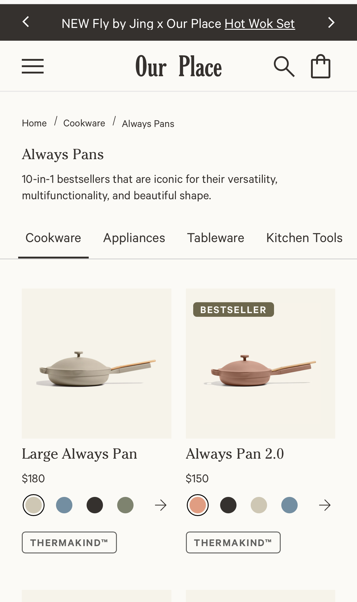

Company Name: Our Place
White space is found in most areas of this site. The brand keeps a clean design by using thin and simple typography. Thin lines trascend in other elements such as icons and buttons. Of whites are used to create a little variation without adding too much. The products are the protagonists given that the brand use their pictures to add pops of color. Small accents in the right elements make this design clean and minimal.